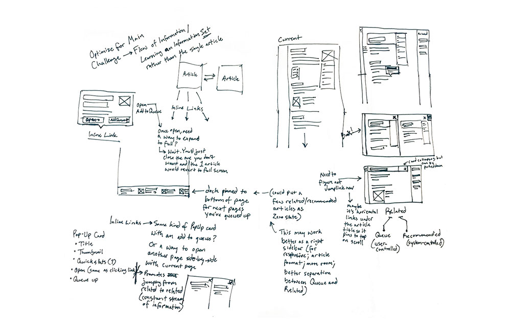
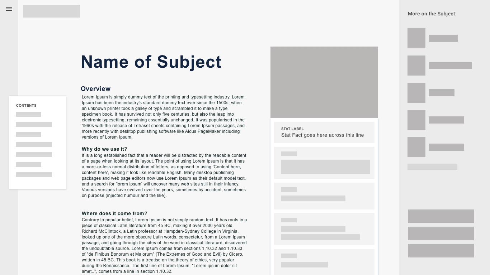

Ideating for Deeper Knowledge
In redesigning a Wikipedia article, my primary motivation was to improve the flow of information within the page as well as between related topics. It's easy to lose yourself in the vast connections that Wikipedia promotes through numerous inline links. One can suddenly jump, for instance, from "Jane Jacobs" to "Greenwich Village" to "60s counterculture" to "assassination of John F. Kennedy"... woah. Though it's fun to gather general information like this, it doesn't encourage a user to dive deeper into a specific topic.
With pen to paper, I started ideating how to better promote a focused line of knowledge ("Urban Planning" for example). I toyed with the idea of allowing desktop users to open up a second article and lay them out side-by-side like a book. I played around with queuing up related articles to show a customizable path forward for users. The simplest idea is often the best, however, and I felt drawn to a sidebar that populated related people, topics, and more.
In addition, I wanted to show users a teaser of what's behind a given inline link in an article before they go clicking down a path that causes them to lose sight of what they originally came to learn about. I sketched out concepts for a pop-up that reveals critical information when a user hovers on any given link. This helps users by a) giving them a hint as to what the link means which helps them digest the current article and b) shows them where that link will lead to better inform them as to whether to pivot or not. I was pleasantly surprised to see that not even a year after I sketched these, Wikipedia released their own version of this pop-up! Good design minds think alike.

Laying Out a Better Page
When it comes to the bones of a Wiki article, there's no changing the solid foundation: a table of contents, a table of quick facts, and the article itself consisting of headings, paragraphs, links, images, and sources. However, I wanted to create a better reading experience than the current version offers.
You may have noticed that the length of a paragraph line on a desktop Wikipedia article page can get long. The wider your screen, the wider the text grows. These lenghty lines harm legibility as most research has shown 45-75 characters to be the the ideal length for reading speed, comprehension, and comfort. On a 1366px wide desktop screen, for instance, most lines of the Jane Jacob article render at 120-180 characters long. In my redesigned article I reigned it in to ~75 characters per line, using a central column to create a more legible length.
In addition to a better read, I added in some quick organization wins. Slotting the table of contents into its own separate container allows it to scroll down the page as a user reads. This way they can jump around within the article as they see fit. I also aimed to better organize the quick facts card on the right side of the page. Wikipedia is doing some great things here but I wanted to give each fact more room to breathe.
The current left sidebar menu adds a lot of visual clutter with its lengthy list of links. So I tucked it all away in a hidden drawer under a "Menu" button. Again, this is a hypothetical redesign but in all the years of my usage and observance of how others use Wikipedia, I've never seen anyone interact with that sidebar menu as it stands today. This also gave me the advantage of freeing up room on the right side of the page for my sidebar of related topics.
